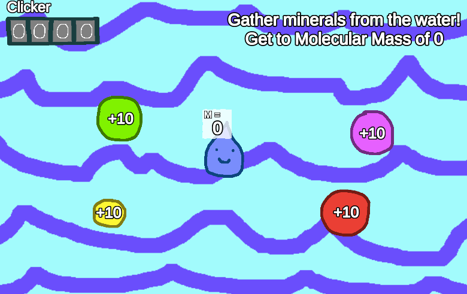

Click Drip is the short game I made for the game jam I run in Bristol, Fuse Jam. This was the third Fuse Jam, and things ran smoothly enough that I was able to do a fair bit of jamming myself.
In Fuse Jam we give teams two themes each, which they can use in combination to provide inspiration to make a game. Every team gets their own theme combo. This year we each got a physical object, and a description of a fictional planet. My themes were:
Object: Clicker
Planet Description: There are large underground reservoirs of liquid water, heated by geothermal vents. Occasionally this water erupts onto the surface and freezes in the cold, covering the planet with ice crystals.
I had a few ideas about a world inside a snowglobe, but got frustrated trying to find an interesting experience that I could create in 2 days. With inspiration from the clicker, and the idea of counting, I decided to make a pseudo-educational game about the water cycle, definitely also inspired by games like Frog Fractions.
I enjoyed making something really simple and unpolished, and any game jam where I get to spend an hour coming up with geology facts feels like a good use of time to me! I also had a lot of fun making art in Doodle Studio 95 by Fernando Ramallo, which is a really great Unity tool for making hand-drawn art with simple animation.
Play the game here.
